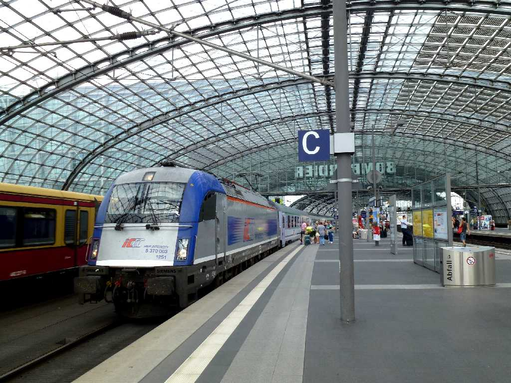
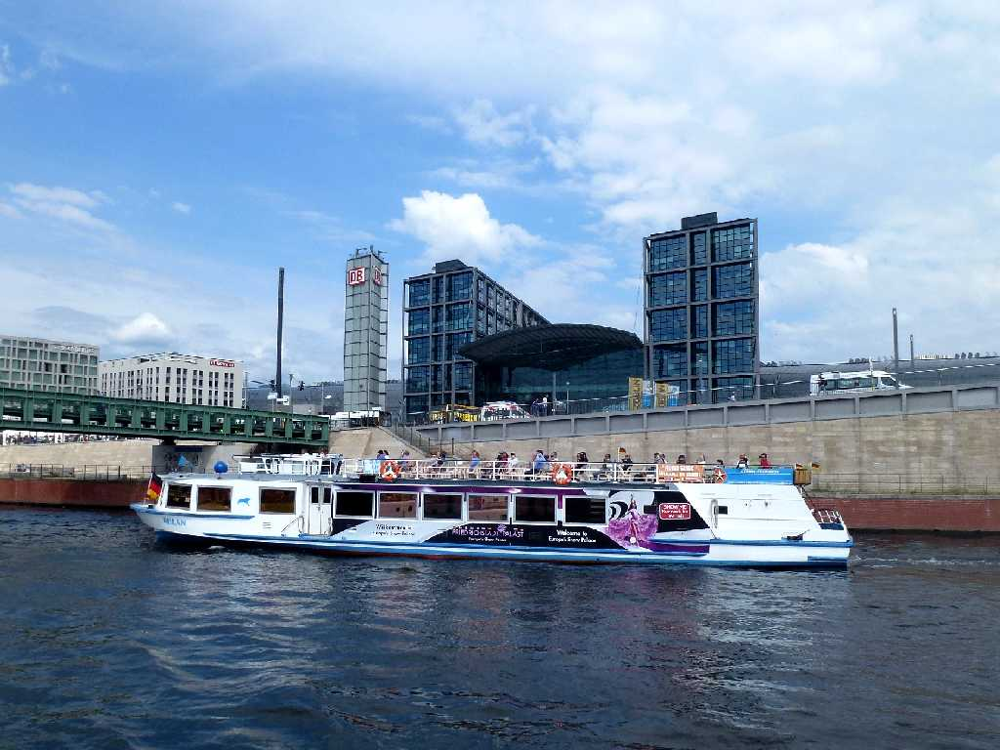
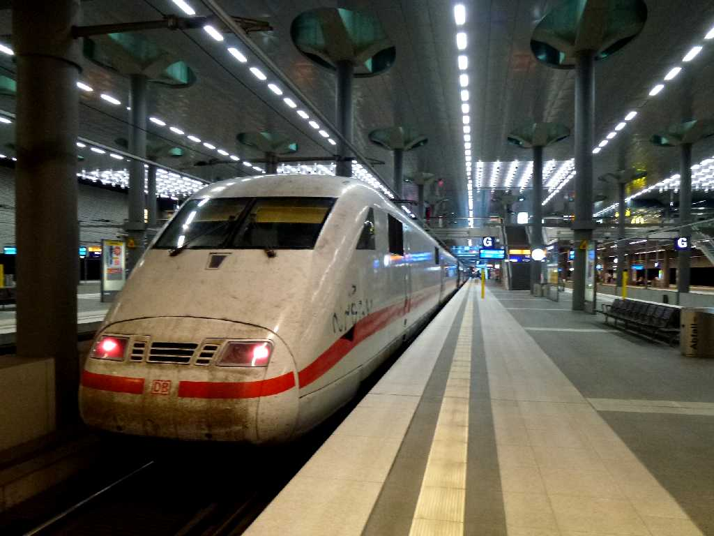

July 26 2013 Hauptbahnhof Berlin
Berlin Warsaw Express Train No.EC44 from 9:55 Warsaw to 15:18 Berlin
８０日間世界一周鉄道の旅で３３日目の今日はベルリンワルシャワエキスプレスでワルシャワ中央駅からベルリン中央駅に到着

Hauptbahnhof Spree
シュプレー川の遊覧船からベルリン中央駅を望む

August 3 2013 Hauptbahnhof Berlin
Inter City Express Train No.ICE279 from 8:33 Berlin to 12:44 Frankfurt
８０日間世界一周鉄道の旅で４１日目の今日はインターシティーエキスプレスでベルリン中央駅からフランクフルト経由でパリ東駅に向かう